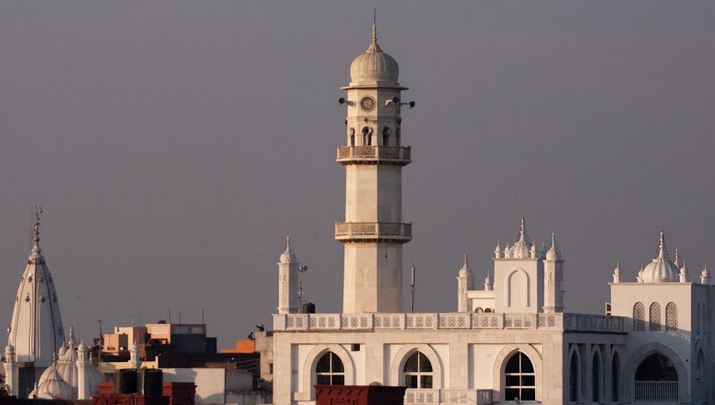

Gurdaspur is a city in the Indian state of Punjab, between the rivers Beas and Ravi. It houses the administrative headquarters of Gurdaspur District and is in the geographical centre of the district, which shares a border with Pakistan.

DemographicsAccording to the 2011 India census,[3] Gurdaspur had a population of 2,299,026 (1,212,995 males and 1,086,031 females). There was a 9.30% increase in population compared to that of 2001. In the previous 2001 census of India, Gurdaspur District had recorded a 19.74% increase to its population compared to 1991. According to religion, Hindus made up 68.9% of the city's population, with Sikhs making up 24.8%.